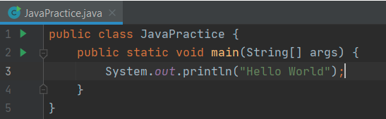

Syntax | Java | Back-end
Opdracht 1 - Basic Syntax
Voordat je Java kan gebruiken moet je de syntax kunnen begrijpen. Doe onderzoek naar de volgende termen en leg uit wat ze (voor Java) betekenen:
- Objects
- Class
- Package
- Constructor
- Instance
- Method
- Objects
- Een "ding" die Java nodig heeft om mee te werken
- Class
- Een blauwdruk van wat een een object weet (properties) en kan (methods)
- Package
- Een groep van classes die iets met elkaar te maken hebben noem je een package
- Constructor
- Dat is de eerste methode die vaak dezelfde naam heeft als de class.
- Instance
- Op het moment dat een class tot leven wordt geroepen (en dus invulling krijgt) noemt men de invulling ervan een instance
- Method
- Een functie binnen een class wordt ook wel method genoemd
Opdracht 2 - Variables
Ook variables werken in Java net iets anders dan je hiervoor misschien gewend bent. Java maakt onderscheid tussen 3 soorten variables: Local variables Instance variables Class variables (ook wel Static variables genoemd) Wat voor soort variabele je gebruikt hangt onder andere af van de plek waar je hem declareert . a) Waar wordt een local variable gedeclareerd? Class/Static variables en Instance variables worden op dezelfde plek gedeclareerd, en houden ook allebei de gegevens van een Object bij. b) Wat voor soort informatie sla je op in een instance variable? c) Wat voor soort informatie sla je op in een class variable? De waarde van een class variable kan je in principe ook opslaan in een instance variable. d) Wat is het voordeel van het gebruiken van een class variable?
Opdracht 3 - Access Control Modifiers
Java gebruikt zogenaamde modifiers om bepaalde eigenschappen van stukjes code te veranderen. Deze zijn te verdelen in Access Control Modifiers en Non-Access Modifiers De Access Control Modifiers zijn heel belangrijk om te begrijpen - die geven namelijk aan welke onderdelen van je applicatie van het betreffende stukje code gebruik mogen maken. Noem de vier verschillende Access Control Modifiers en geef bij elke een korte beschrijving.
Access Control Modifiers
- Public
- Toegang is mogelijk in en uit een class en of in en uit een package
- Private
- Alleen toegankelijk binnen de class
- Protected
- Alleen toegankelijk binnen de package en kinderen van die package
- Default
- Alleen toegankelijk binnen de package, als je geen access modifier aangeeft, is dit de standaard waarde
Opdracht 4 - Non-Access Modifiers
Zoals bij de vorige opdracht vermeld stond, zijn er ook enkele Non-Access Modifiers. Het grootste deel hiervan hoef je nog niet te kennen, maar de volgende twee wel:
- Static
- Final
Opdracht 5 - Strictly Typed
Er wordt in IT onderscheid gemaakt tussen programmeertalen die Strictly/Strongly Typed zijn, en talen die Loosely/Weakly Typed zijn. Java is Strictly Typed - dit betekent dat je bij elke variabele in Java een datatype moet declareren. Bij Loosely Typed programmeertalen zoals JavaScript hoeft dit niet.
a) Wat is een voordeel van Strict Typing?
b) Wat is een voordeel van Weak Typing?
Opdracht 6 - main & Arrays
De main method van een Java class is de functie die wordt uitgevoerd als je een programma draait. Dit zal er altijd zo uit zien:

Public & static heb je hiervoor gehad; die geven aan dat je main method toegankelijk is voor iedereen, en dat deze voor elke Object van je class precies hetzelfde is.
void geeft aan dat er geen return value wordt verwacht. Bij de main method is dit verplicht!
Tenslotte nog Dit slaat op de naam en parameters.
Met String[] args geef je dus aan dat de parameters van de main method in een array zitten. Dit array heet args (kort voor arguments) en bestaat enkel uit strings.
a) Kan je een reden bedenken waarom deze parameter verplicht is?
System.out.println() wordt gebruikt om tekst weer te geven in de console. Voor debugging doeleinden kan je dit net zo gebruiken als de console.log() command van JavaScript.
Arrays declareer je zo:
b) Kan je elementen van een Java Array veranderen?
C) Kan je elementen aan een Java Array toevoegen?
Net als bij JavaScript worden Arrays vaak gebruikt in combinatie met Loops. In de volgende opdracht gaan we hier verder op in.
Opdracht 7: Theorie
Opdracht 8 - Loops & Conditions
Er wordt in IT onderscheid gemaakt tussen programmeertalen die Strictly/Strongly Typed zijn, en talen die Loosely/Weakly Typed zijn. Java is Strictly Typed - dit betekent dat je bij elke variabele in Java een datatype moet declareren. Bij Loosely Typed programmeertalen zoals JavaScript hoeft dit niet.
a) Wat is een voordeel van Strict Typing?
b) Wat is een voordeel van Weak Typing?